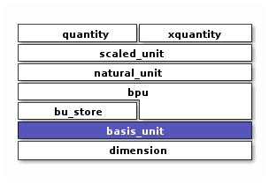

Basis Unit
A unit representing a fixed multiple of a native dimension.
Context
Introduction
A basis_unit represents a unit belonging to a single native dimension.
For example bu::meter representing a distance of 1 meter.
#include <xo/unit/basis_unit.hpp>
{kind=link}
basis unit representing 1 minute
basis_unit is intended as an implementation-level abstraction.
Application code will normally interact with the more-capable scaled_unit
instead of basis_unit.
Class
-
class basis_unit
A dimensionless multiple of a single natively-specified basis dimension.
For example “3600 minutes” or “1e-6 grams”
Member Variables
- group basis-unit-instance-vars
Constructors
- group basis-unit-constructors
Access Methods
- group basis-unit-access-methods
Comparison
- group basis-unit-comparison-support
Functions
-
inline constexpr bool operator==(const basis_unit &x, const basis_unit &y)
-
inline constexpr bool operator!=(const basis_unit &x, const basis_unit &y)
-
inline constexpr bool operator==(const basis_unit &x, const basis_unit &y)